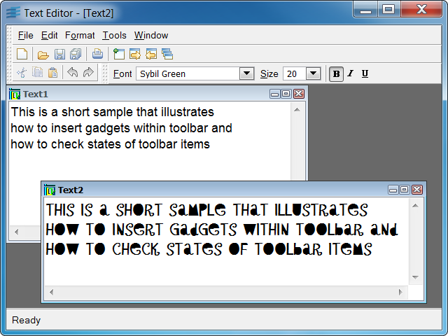

textExample of a simple text editor.
This program lets you edit text files and change the font parameters of the displayed text. It shows you how to manage gadgets inserted in a toolbar (for example, a combobox) using the event mechanism of the Application Framework library.
IlvDvTextDocumentIlvDvTextView